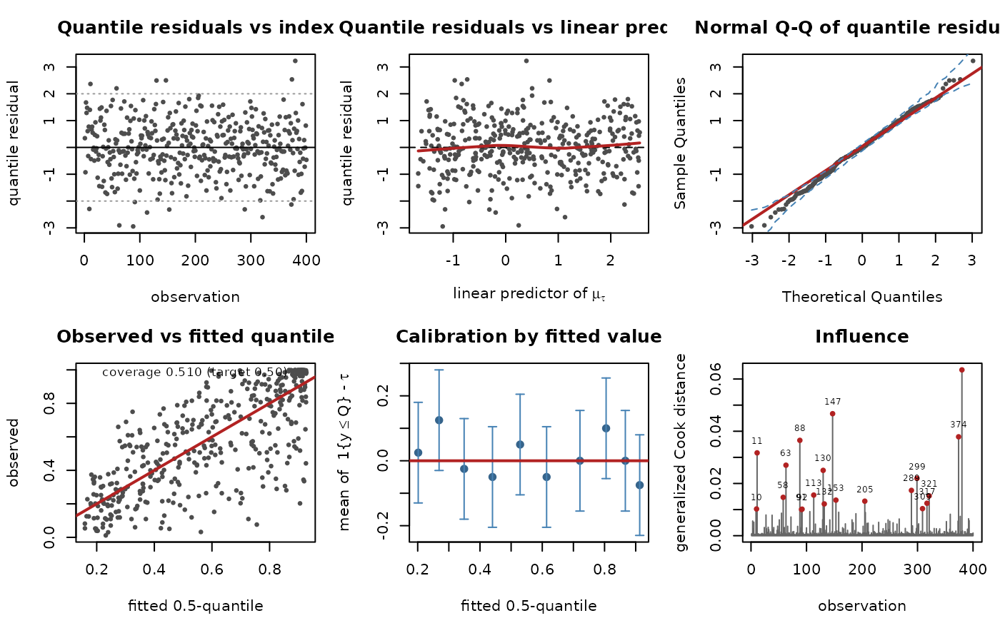
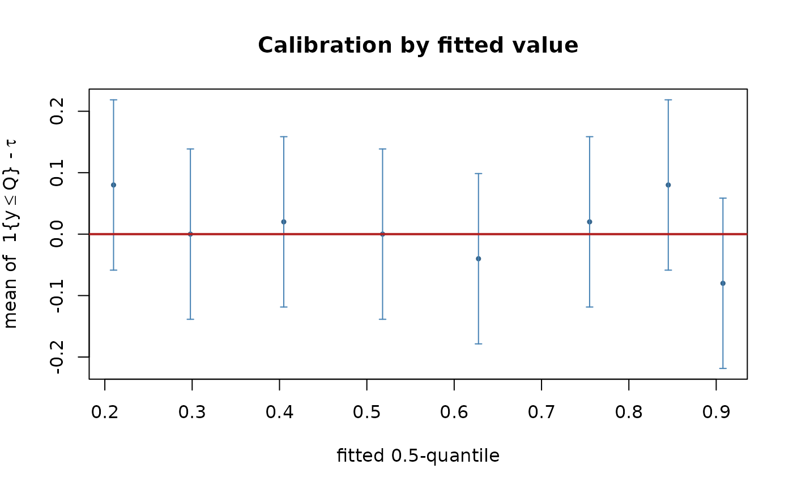
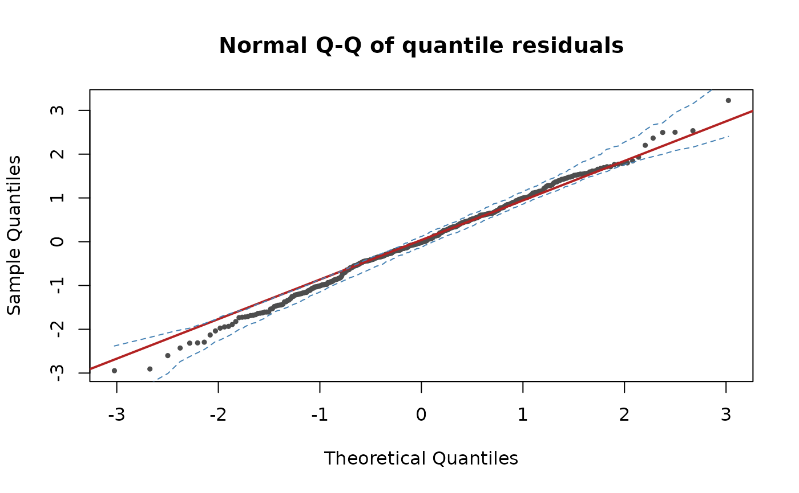
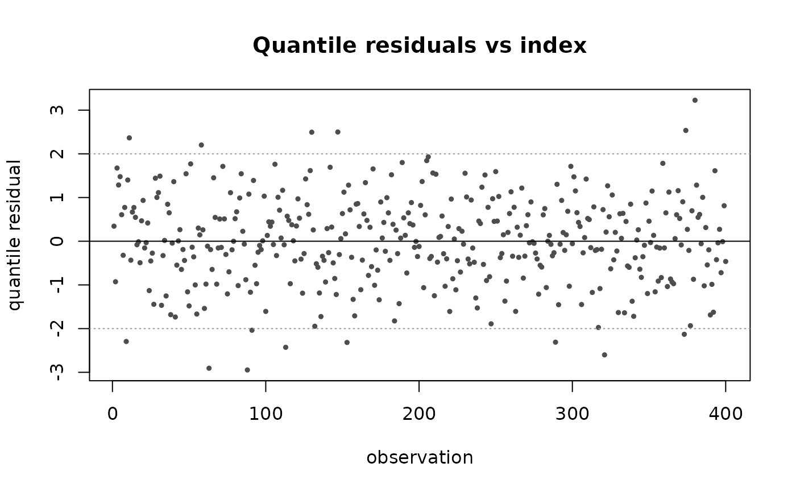
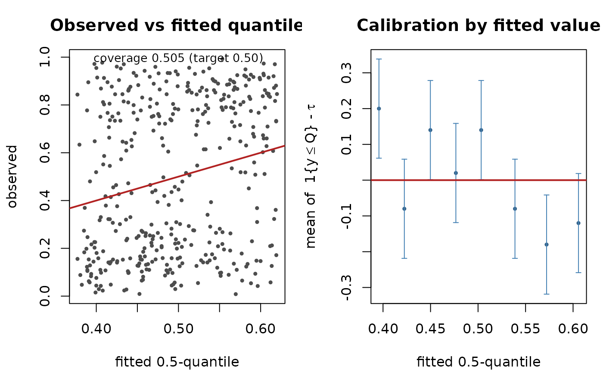

Six diagnostic panels for a "gkwqreg" fit. Four of them are the familiar
regression diagnostics transferred to a quantile-residual scale; two of them,
panels 4 and 5, ask a question that mean regression cannot pose at all, namely
whether the fitted quantile is a quantile of the right level.
Usage
# S3 method for class 'gkwqreg'
plot(x, which = 1:6, nsim = 100L, nbins = 10L, ...)Arguments
- x
A
"gkwqreg"fit. The response must have been retained, which is the default (y = TRUEingkwqreg()); every panel needs it, and an informative error is raised if it is absent.- which
Integer vector selecting panels, any subset of
1:6. Values outside that range are dropped; an empty selection returns immediately without drawing anything. When more than one panel is requested the device is split into a grid at most three columns wide and the previousgraphics::par()settings are restored on exit.- nsim
Number of simulated samples used to build the pointwise envelope in panel 3.
0draws the Q-Q plot and its reference line without an envelope. Ignored when panel 3 is not requested.- nbins
Target number of bins for the calibration panel, panel 5. Bins are the empirical quantiles of the fitted values, so they hold roughly equal counts. Ties in the fitted values can collapse breakpoints; if fewer than three distinct breaks survive, panel 5 is skipped silently rather than drawn from one or two bins.
- ...
Passed to the underlying
graphics::plot()calls in panels 1, 2, 4, 5 and 6. Panel 3 is drawn bystats::qqnorm()and does not receive them. Note thatmain,xlab,ylab,pch,cexandcolare already supplied by each panel, so passing them again will raise a duplicated-argument error.
Details
Panels 1 to 3 and 6 are computed from the randomized-quantile residuals of Dunn
and Smyth (1996), residuals(x, type = "quantile"), which for this family
require no randomization because the distribution is continuous:
$$r_i = \Phi^{-1}\left\{ F(y_i; \hat{\theta}_i) \right\}.$$
At the true parameter values these are exactly independent standard normal
draws, whatever the family, the level or the link, and at the estimates they
are so up to the usual estimation error. Non-finite values, which can arise
when an observation falls in a tail so extreme that both tails of \(F\)
underflow, are set to NA and omitted from the panels.
Panel 1 – quantile residuals against observation index
Plots \(r_i\) against \(i\), with solid and dotted horizontal guides at
\(0\) and \(\pm 2\). Roughly five percent of the points should lie
outside the dotted lines and they should be scattered without pattern. Read it
for serial structure and for clusters: if the rows carry an order that means
something (time, space, a grouping) a visible run is evidence that the
independence assumption behind the likelihood does not hold, and the standard
errors from vcov.gkwqreg() are then optimistic. Consider a sandwich or
clustered covariance through estfun.gkwqreg().
Panel 2 – quantile residuals against the linear predictor
Plots \(r_i\) against \(\eta_i = x_i^{\top}\hat{\beta}\), the linear
predictor of the conditional-quantile part mu, with a horizontal line at zero
and a lowess smooth in red when at least eleven finite points are available.
The smooth should be flat. Curvature in it is evidence of a misspecified mean
structure for the quantile: a missing nonlinear term in a covariate, or a link
that does not suit the data. A fan shape is not read the way it would be in a
linear model. Quantile residuals are standard normal by construction under a
correct model, whatever the conditional dispersion, so spread that changes with
\(\eta\) is not heteroscedasticity in the usual sense; it says that the
shape parameters, held constant here, should themselves have been regressed on
the covariates. Give them a formula part and compare the two fits with
lrtest().
Panel 3 – normal Q-Q plot with a simulated envelope
Ordered quantile residuals against standard normal plotting positions, with the
usual Q-Q reference line and, when nsim > 0, a dashed pointwise envelope. The
envelope is obtained by drawing nsim samples of \(n\) independent
standard normal variates, sorting each and taking the 2.5th and 97.5th
percentiles of each order statistic. Two cautions. It is a pointwise envelope,
so with many observations some points will stray outside it even under a
correct model; and it is built from independent standard normal draws, which
means it ignores the uncertainty in \(\hat{\theta}\) and is
consequently a little narrow in small samples. Systematic departure at one end
identifies which tail of the response the family is failing to represent.
Panel 4 – observed against fitted quantile, with coverage
Plots \(y_i\) against \(\hat{Q}_\tau(x_i)\) with the 45-degree line, and annotates the empirical coverage
$$\widehat{\mathrm{cov}} = \frac{1}{n}\sum_i \mathbf{1}\{y_i \le \hat{Q}_\tau(x_i)\},$$
which should sit at \(\tau\). This panel has no counterpart in mean regression, where the analogous scatter carries no such calibration statement. The points are not expected to lie on the 45-degree line – at \(\tau = 0.5\) half of them should fall on each side, and at \(\tau = 0.9\) nine tenths should fall below it. The line is a reference for the proportion on each side, not for the distances. Coverage is a single global number and a weak check: it can be exactly right while the fit is badly calibrated in every region of the covariate space, with the errors cancelling. Panel 5 is the panel that detects that.
Panel 5 – calibration by fitted value
The panel specific to quantile regression, and the reason to look at this plot rather than a mean-regression one. Under correct specification of the conditional \(\tau\)-quantile,
$$E\left[ \mathbf{1}\{Y \le Q_\tau(X)\} \mid X \right] = \tau \quad \text{exactly, for every } X.$$
This is an identity, not an approximation and not an asymptotic result: it follows from the definition of a quantile and holds whatever the shape of the conditional distribution. It therefore supplies a distribution-free specification check, available in quantile regression and with no analogue in mean regression, where the corresponding statement about \(E[Y - \hat{\mu}(X) \mid X]\) requires the mean model to be correct in the first place.
The panel bins the observations into nbins groups of roughly equal size by
fitted value and plots, at the mean fitted value of each bin, the bin mean of
the tau-sign residuals
\(\mathbf{1}\{y_i \le \hat{Q}_i\} - \tau\), which is
zero in expectation. Each point carries the interval
$$\pm 1.96 \sqrt{\tau(1 - \tau) / n_b},$$
the normal approximation to the standard error of a mean of \(n_b\) Bernoulli(\(\tau\)) indicators. A bin whose interval excludes the red zero line is direct evidence that the fit is miscalibrated in that region of the covariate space. The intervals are pointwise, so about one bin in twenty strays by chance and an isolated excursion among the default ten bins is unremarkable; what matters is a pattern across adjacent bins, such as a systematic tilt from one end of the fitted range to the other. See the examples, where a mixture response passes the global coverage check of panel 4 and fails this one in half its bins.
Panel 6 – influence
A generalized Cook distance, plotted as a spike for each observation:
$$D_i = \frac{1}{p}\, s_i^{\top} \hat{V} s_i,$$
with \(s_i\) the observation's score contribution from
estfun.gkwqreg(), \(\hat{V}\) the estimated covariance matrix from
vcov.gkwqreg() and \(p\) the number of estimated coefficients. This is
the usual one-step approximation to the squared change in
\(\hat{\beta}\) induced by deleting observation \(i\), measured in
the metric of \(\hat{V}\). Points above the conventional \(4/n\)
threshold are highlighted and labelled with their row number so that they can be
looked up in the data. The threshold is a convention with no distributional
basis: use it to rank observations, not to test them. This is the one panel
that needs the estimated covariance matrix, so it is unavailable for a fit
obtained with gkwq_control(hessian = FALSE).
References
Dunn, P. K. and Smyth, G. K. (1996). Randomized quantile residuals. Journal of Computational and Graphical Statistics 5, 236-244.
See also
residuals.gkwqreg() for the residual types used here, including
type = "tau-sign" behind panel 5; pinball() for an out-of-sample
criterion; check_crossing() for monotonicity across levels.
Examples
## ---- A correctly specified fit -------------------------------------------
set.seed(1)
n <- 400
x <- runif(n, -2, 2)
mu <- plogis(0.4 + 1.1 * x)
y <- gkwdist::rkw(n, alpha = 2, beta = log1p(-0.5) / log1p(-mu^2))
d <- data.frame(y = y, x = x)
fit <- gkwqreg(y ~ x, data = d, tau = 0.5, family = "kw")
## All six panels at once.
plot(fit)

## The number panel 4 annotates: it should sit at tau.
mean(d$y <= fitted(fit))
#> [1] 0.51
#> 0.51 (target 0.50)
## Panel 5 alone, with eight bins. Every interval covers zero here.
plot(fit, which = 5, nbins = 8)

## Panel 3 with a denser envelope, and panel 1 with none.
plot(fit, which = 3, nsim = 200)

plot(fit, which = 1, nsim = 0)

## ---- Why panel 5 is worth more than panel 4 ------------------------------
## A two-component beta mixture is bimodal and lies outside the Generalized
## Kumaraswamy family entirely, so the fit below is badly misspecified.
set.seed(2)
z <- rbinom(n, 1, plogis(0.5 * x))
ymix <- ifelse(z == 1, rbeta(n, 8, 2), rbeta(n, 2, 8))
dm <- data.frame(y = pmin(pmax(ymix, 1e-8), 1 - 1e-8), x = x)
bad <- suppressWarnings(gkwqreg(y ~ x, data = dm, tau = 0.5, family = "kw"))
## Panel 4 sees nothing wrong: global coverage is essentially perfect.
mean(dm$y <= fitted(bad))
#> [1] 0.505
#> 0.505 (target 0.50)
## Panel 5 does. Four of the eight bins have intervals excluding zero. A
## positive bin mean says too many observations fell at or below the fitted
## quantile there, so the fit sits too HIGH where the fitted median is small
## and too LOW where it is large: the fitted curve is flatter than the truth,
## and the two errors cancel exactly in the global average above.
plot(bad, which = c(4, 5), nbins = 8)

## The same information as numbers, which is what the panel draws.
rs <- residuals(bad, type = "tau-sign")
fv <- fitted(bad)
br <- unique(quantile(fv, probs = seq(0, 1, length.out = 9), names = FALSE))
g <- cut(fv, br, include.lowest = TRUE)
round(cbind(bin_mean = tapply(rs, g, mean),
half_width = 1.96 * sqrt(0.5 * 0.5 / tapply(rs, g, length))), 3)
#> bin_mean half_width
#> [0.377,0.409] 0.20 0.139
#> (0.409,0.437] -0.08 0.139
#> (0.437,0.465] 0.14 0.139
#> (0.465,0.491] 0.02 0.139
#> (0.491,0.522] 0.14 0.139
#> (0.522,0.554] -0.08 0.139
#> (0.554,0.588] -0.18 0.139
#> (0.588,0.62] -0.12 0.139
#> bin_mean half_width
#> [0.377,0.409] 0.20 0.139 <- excludes zero
#> (0.409,0.437] -0.08 0.139
#> (0.437,0.465] 0.14 0.139 <- excludes zero
#> ...